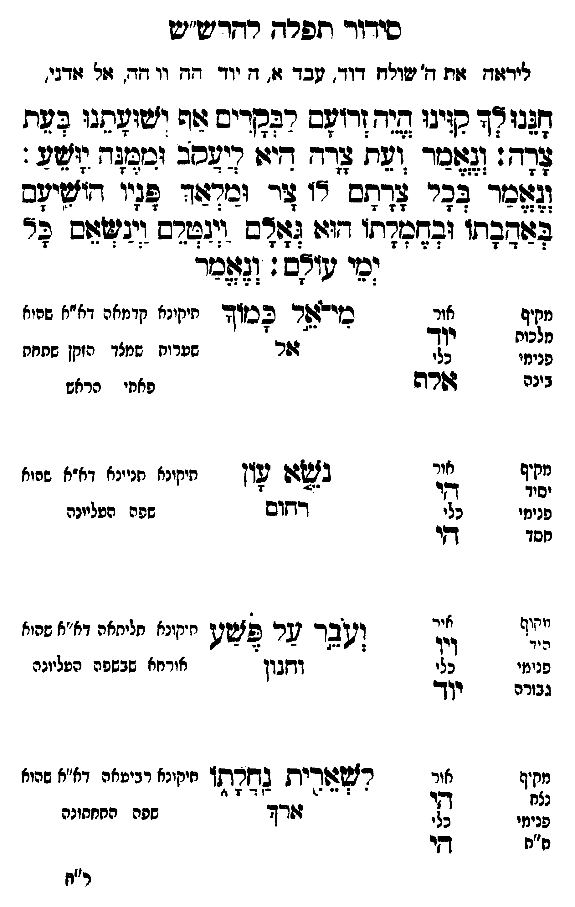

Neue Klartextfassung
[ליראה את ה', שולחן דוד, עבד א, ה יוד הה וו הה, אל אדני,] חננו לך קוינו היה זרעם לבקרים אף ישועתנו בעת צרה: ונאמר ועת צרה היא ליעקב וממנה יושע: ונאמר בכל צרתם לו צר ומלאך פניו הושיעם באהבתו ובחמלתו הוא גאלם וינטלם וינשאם כל ימי עולם: ונאמר === טבלה === [מי אל כמוך — תיקונא קדמאה דא"א שהוא שערות שתחת הזקן [?]] מי אל כמוך אל [מבחי' קדם] [מקיף — מלכות; אור — יוד; כלי — אלף; פנימי — בינה] [נשא עון — תיקונא תניינא דא"א שהוא שפה העליונה] נשא עון רחום [מקיף — יסוד; אור — הי; כלי — הי; פנימי — חסד] [ועבר על פשע — תיקונא תליתאה דא"א שהוא האורח שבשפה העליונה] ועבר על פשע וחנון [מקיף — הוד; אור — ויו; כלי — יוד; פנימי — גבורה] [לשארית נחלתו — תיקונא רביעאה דא"א שהוא שפה התחתונה] לשארית נחלתו ארך [מקיף — נצח; אור — הי; כלי — הי; פנימי — ת"ת] === סוף טבלה ===
Original gegen neue OCR · Niqqud für Vergleich ausgeblendet
Original
[ליראה את ה', שולחן דוד, עבד א, הK135-001 יוד ההK135-002 וו הה, אל אדני,] חננו לך קוינו היה זרעם לבקרים אף ישועתנו בעת צרה: ונאמר ועת צרה היא ליעקב וממנה יושע: ונאמר בכל צרתם לו צר ומלאך פניו הושיעם באהבתו ובחמלתו הוא גאלם וינטלם וינשאם כל ימי עולם: ונאמר === טבלה === [מי אל כמוך — תיקונא קדמאהK135-003 דא"א שהוא שערות שתחת הזקן ] מי אל כמוך אל [מבחי' קדם] [מקיף — מלכות;K135-004 אור — יוד; כלי — אלף; פנימי — בינה] [נשא עון — תיקונא תניינא דא"א שהוא שפה העליונה] נשא עון רחום [מקיף — יסוד; אור — הי; כלי — הי; פנימי — חסד] [ועבר על פשע — תיקונא תליתאה דא"א שהוא האורח שבשפה העליונה] ועבר על פשע וחנון [מקיף — הוד; אור — ויו; כלי — יוד; פנימי — גבורה] [לשארית נחלתו — תיקונא רביעאה דא"א שהוא שפה התחתונה] לשארית נחלתו ארך [מקיף — נצח; אור — הי; כלי — הי; פנימי — ת"ת] === סוף טבלה ===K135-005
OCR · fehlbar
סידודי תפרח רחדישע"וט לידוח זת ד' ישולח דוד. בד ג(. 1K135-001 יוד דגץK135-002 וו זד. גזל דני. זבו צד סזיבו שנדר (רזלס רבקדיש בוזה וזשולתבו 2 ת לדר: (צזצר זר צ[- דגי (יגכב יבצצץ [36 זכר' צהר לחכ' רז צה וציזצד זין דיציזב בגטי זבחצדתו ז ]ודם י(גגדש. יגצצכם לי לי שיצם: (גצלכר מקיף אור כזידבשר ככד יזינינא זומזה דא"א שני מלכות יזךך -- - 1 פנימי כלי דזר שערוח שמצך הזקן שתחת בינה גשרה פאחי הראש מקי אור ל י. - אל) לל בצלש פז. חיחינא תניינא דא"א שחיז פנימי כלי דחום שפה העליונה חסד דקי ק איר ש אאת . ו ז ג..ז ו:) (בר שר לזשך חיקונא חליחאהK135-003 דא"א שהוא פנימי כלי וזבון אורחא שבשפה הטליונה גבורה שלש מחיףK135-004 אור רזשצודית גשהתו ניייו) ינידזר י"י פרי" לאל צץ דודך שפלה החחחונה ח"ח בש ר"חK135-005